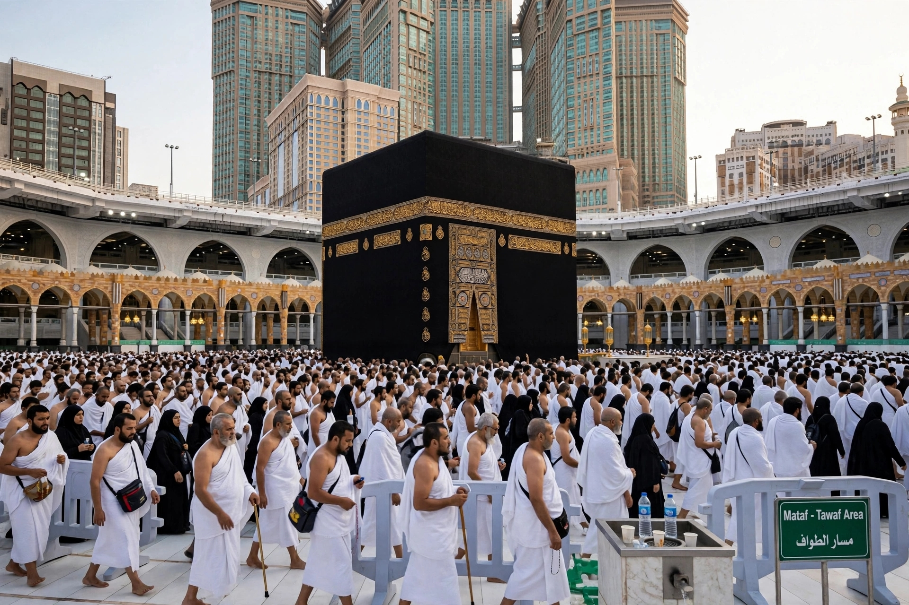
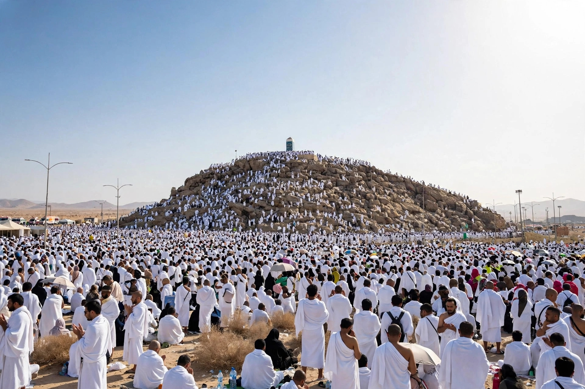
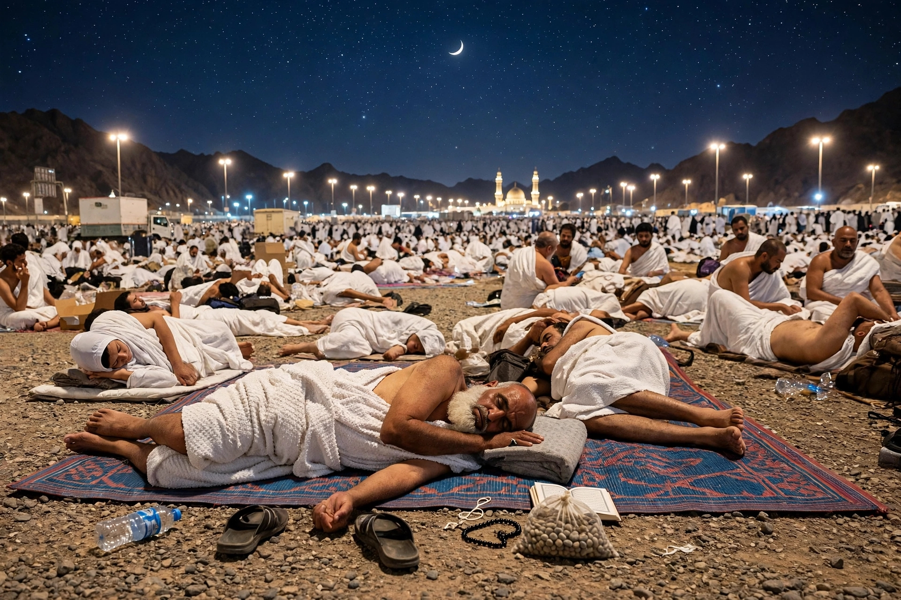
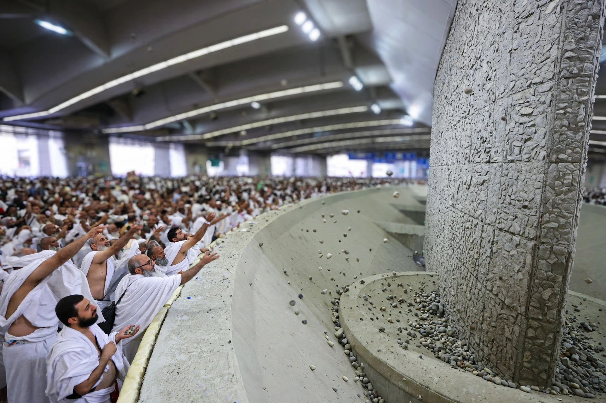
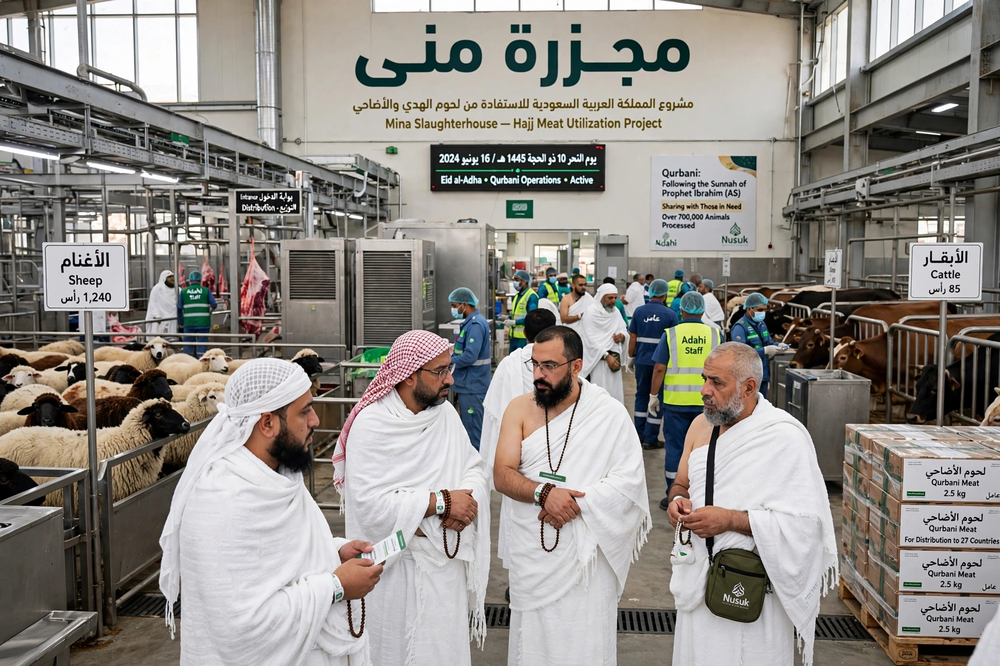
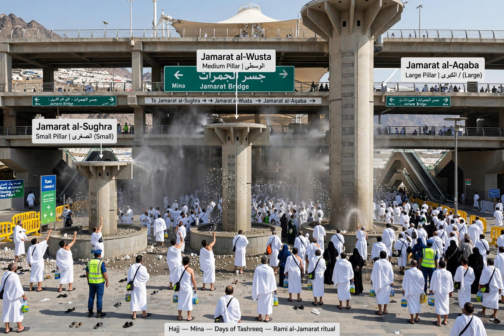

Niyya:
Lallai mai aikin Hajji ko Umarah ya kysatata niyyarsa, yayi guzurin tsoran Allah a zuciyarsa yasan cewa ibadah ya tafi ba yawon bude ido ba
Allah yana cewa:Ma’ana: “Ku tanadi guzuri, domin mafi alherin guzuri shi ne taqawa. Kuma ku ji tsorona, ya ma’abota hankali.”
Allah Ta'ala yace:
﴿وَأَتِمُّوا الْحَجَّ وَالْعُمْرَةَ لِلَّهِ﴾“Ku cika Hajji da Umra saboda Allah.” — Al-Baqarah 2:196
Mataki na 1 — Kafin a shiga ihrami
Mai Hajji zai shirya, ya yi wanka idan ya so, ya shirya tufafin ihrami, sannan ya tafi zuwa miqat.
Annabi ﷺ ya kayyade wuraren miqat ga waɗanda suke zuwa Hajji ko Umra.

Mataki na 2 — Ihrami da Umra
A tsarin Tamattu'i, mutum zai yi niyyar Umra a miqat. Sai ya shiga ihrami ya fara talbiya:
Daga nan ya ci gaba da talbiya har zuwa Makkah.

Mataki na 3 — Tawafin Umra
Da ya isa Masjid al-Haram:
- Ya shiga Masallacin Harami.
- Ya nufi Ka'aba.
- Ya fara Tawaf daga wajen Hajarul Aswad.
- Ya yi zagaye bakwai.
- Bayan haka ya yi raka'a biyu.
- Sai ya tafi Safa.

Mataki na 4 — Sa'ayi
Daga Safa sai ya fara Sa'i tsakanin Safa da Marwa.
| Safa → Marwa | Marwa → Safa | Adadi |
|---|---|---|
| Safa → Marwa | 1 | |
| Marwa → Safa | 2 | |
| Safa → Marwa | 3 | |
| Marwa → Safa | 4 | |
| Safa → Marwa | 5 | |
| Marwa → Safa | 6 | |
| Safa → Marwa | 7 |
Saboda haka za a ƙare ne a Marwa.

Mataki na 5 — Aski ko rage gashi
Bayan Sa'ayi na Umrah, namiji: zai iya aski gaba ɗaya, ko ya rage gashi. Sai ya fita daga ihrami.
A nan ne Tamattu'i ya bambanta da Qirān da Ifrād.
- Mai Tamattu'i: ya fita daga ihrami bayan Umra.
- Mai Qirān/Ifrād: ba ya fita daga ihramin Hajji a wannan lokacin.
Qur'ani ya ambaci aski da rage gashi a matsayin wani ɓangare na kammala ibadar.
masu rage gashi = مُقَصِّرِينَ

Mataki na 6 — Ranar 8 ga Dhul-Hijjah
Yanzu mai Tamattu'i zai sake shiga ihrami domin Hajji daga Makkah. Sai ya yi niyyar Hajji, ya fara talbiya, sannan ya tafi Mina.
A Mina zai yi sallolin: Azahar, La'asar, Magariba, Isha'i, Asuba ta ranar 9.
Mataki na 7 — Ranar 9: Arafah
Bayan sallar Asuba, sai a tafi Arafah. Wannan ita ce rana mafi muhimmanci a Hajji.
A Arafah: a yi sallar Azahar da La'asar a lokacin Azahar bisa Sunnah ta jam'i da kasaru ga mahajjata, a yi addu'a, zikiri, istighfari, karatun Qur'ani, da sauran ibadu.
“Dukkan Arafah wurin tsayuwa ne.” — Sahih Muslim 1218c

Lallai mahajjata su yawaita Addu'a da zikir a filin Arfa

Mataki na 8 — Bayan faɗuwar rana: Muzdalifah
Bayan rana ta faɗi, sai a tafi Muzdalifah. A can: a yi Magariba da Isha'i tare, sannan a kwana a wajan, a yi zikiri da addu'a, sannan a yi Sallar Asuba.

Mataki na 9 — Ranar 10: Mina (Yawm an-Nahr)
A nan akwai manyan ayyuka guda huɗu:
1. Jifar Jamrat al-'Aqabah (Jifan Sheɗan)
A jefa duwatsu bakwai, ɗaya bayan ɗaya, tare da yin takbiri. Ibn Umar ya bayyana yadda Annabi ﷺ yake yin jifa da duwatsu bakwai.

2. Hadaya (Yanka)
Idan bai sami abin hadayar ba, ayar ta bayyana madadin azumin kwanaki uku lokacin Hajji da bakwai bayan dawowa, guda goma.

3. Aske ko rage gashi
Sai ya aske ko ya rage gashi.
4. Tawaf al-Ifadah (Ɗawafi Ziyara)
Sai ya tafi Makkah ya yi Tawaf al-Ifadah.
Mataki na 10 — Sa'ayi bayan Tawaf al-Ifadah
Ga mai Tamattu'i, akwai Sa'ayi na biyu bayan Tawaf al-Ifadah, domin wannan shi ne Sa'ayin Hajji. Saboda haka mai Tamattu'i yana da:
- Sa'ayin Umra = na farko
- Sa'ayin Hajji = na biyu
Mataki na 11 — Komawa Mina (11,12,13)
Bayan ayyukan ranar 10, sai mahajjaci ya koma Mina. A ranakun 11, 12, kuma 13 idan ya so ya ƙara zama ana jifan Jamarat uku:
- Jamrat as-Sughra
- Jamrat al-Wusta
- Jamrat al-Kubra
Kowacce ana jifanta da duwatsu bakwai. Bayan ƙaramar Jamrah da ta tsakiya, Sunnah ce a tsaya a yi addu'a; Ibn Umar ya bayyana haka daga aikin Annabi ﷺ.

Mataki na 12 — Ranar 12 ko 13
Idan mahajjaci ya gama jifan ranar 12 kuma ya bar Mina kafin rana ta faɗi, yana iya yin Nafar na farko. Idan ya ci gaba da zama, sai ya yi jifar ranar 13 sannan ya tafi.
An-Nafar (النَّفْر) - Fita daga Mina
Nafar a Hajj yana nufin fita daga Mina zuwa Makkah bayan an kammala ayyukan jifa.
- Nafar na Farko (النفر الأول): fita daga Mina a ranar 12 ga Zul-Hijjah, kafin faɗuwar rana.
- Nafar na Biyu: zama har ranar 13, a yi jifa, sannan a fita daga Mina.
﴿فَمَنْ تَعَجَّلَ فِي يَوْمَيْنِ فَلَا إِثْمَ عَلَيْهِ وَمَنْ تَأَخَّرَ فَلَا إِثْمَ عَلَيْهِ﴾
Al-Baqarah 2:203Ma'ana: Wanda ya yi gaggawa ya fita cikin kwanaki biyu, babu laifi a kansa; wanda ya jinkirta, babu laifi a kansa.
Mataki na 13 — Tawaf al-Wada' (Ɗawafin Bankwana)
Kafin ya bar Makkah, sai ya yi Tawaf al-Wada'.
Bayan Tawaf al-Wada', idan zai bar Makkah, Hajjinsa ya kammala.
Tsarin duka a layi ɗaya
والله أعلم